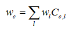
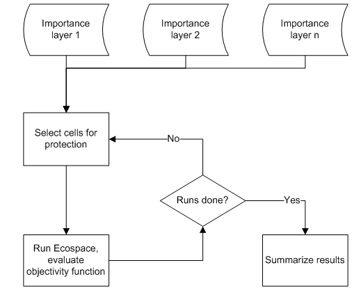
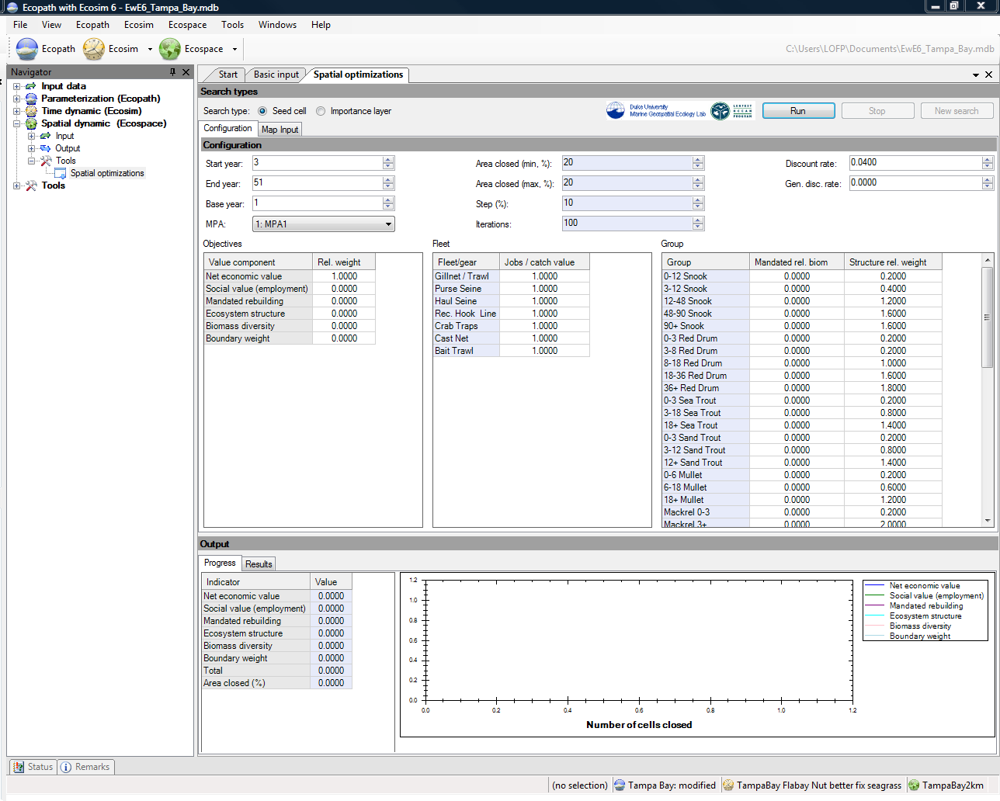
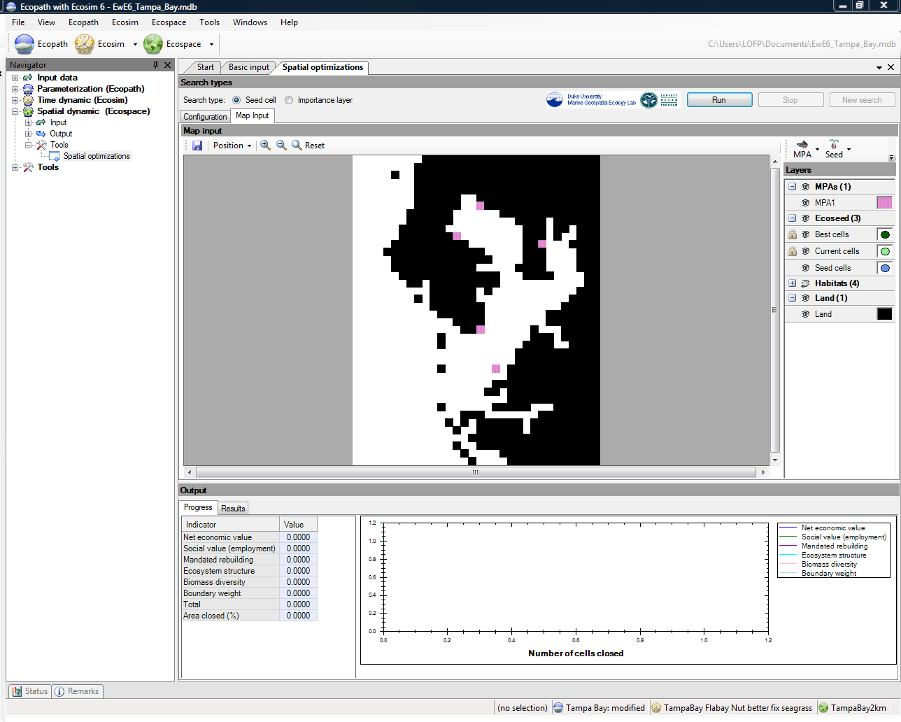
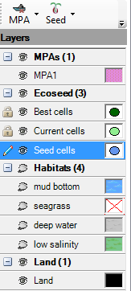
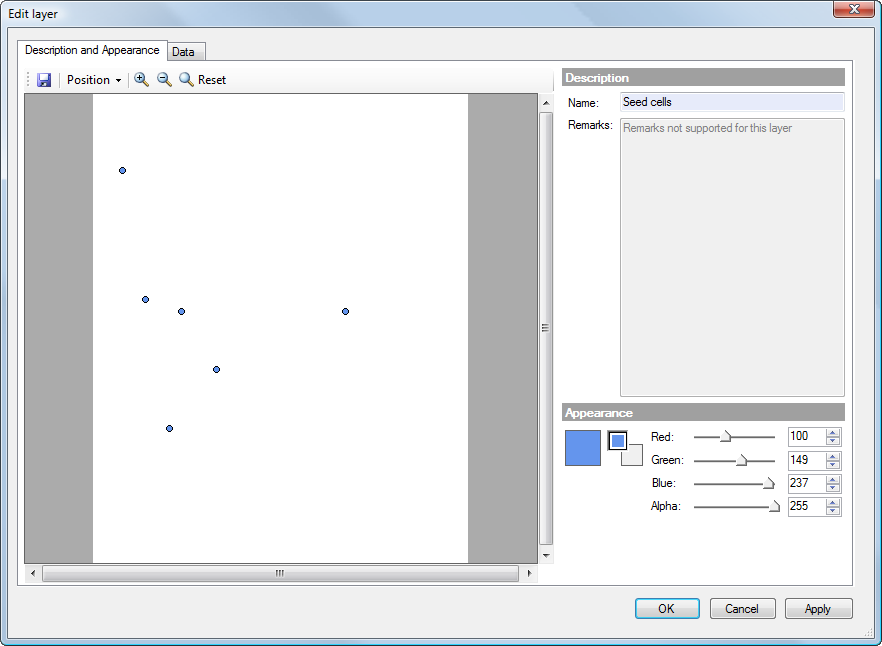
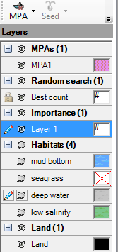
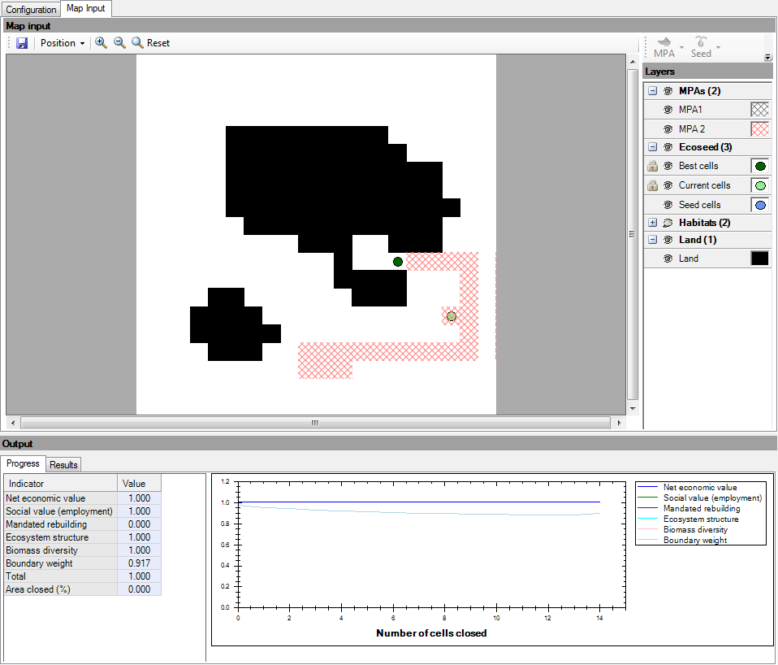
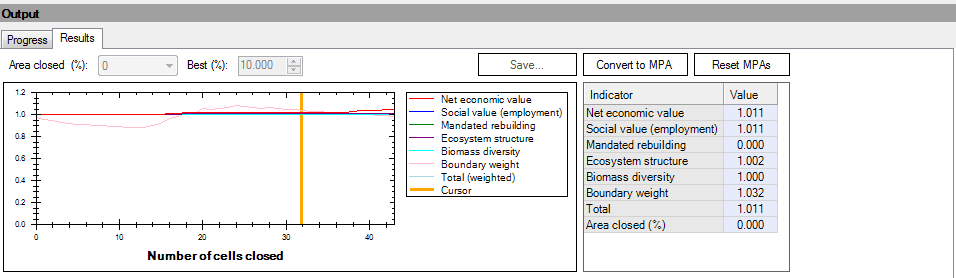

EwE6 now allows you to use Ecospace to search for optimum placement of marine protected areas (MPAs) that would maximize a user-defined objective function. This routine is implemented using the Spatial optimizations form (Spatial dynamic (Ecospace) > Tools > Spatial optimizations).
NOTE: Before using this routine you must have already defined an Ecosim scenario (see Ecosim menu) and an Ecospace scenario (see Ecospace menu). Load the scenarios from the Ecosim and Ecospace menus or from the Ecosim [ ] and Ecospace [] shortcut buttons.
] and Ecospace [] shortcut buttons.
While Ecospace has been applied quite extensively in a gaming- and scenario-development mode, we have only seen very limited effort applied to spatial optimization and zoning. A first attempt in this direction is represented, though, by the ‘Ecoseed’ approach, developed for Ecospace some years ago as part of a thesis project (Beattie 2001; Beattie et al. 2002), but never fully implemented and released as part of the software. We have developed this approach to incorporate a new objectivity function, bringing it to a level where it is part of the released EwE6. Further, we describe a new spatial optimization module, which uses the same objectivity function as the updated seed cell, but where the spatial cell selection process is influenced by spatial reference layers, typically of conservation interest.
Two alternative approaches to running the routine have been developed: (i) 'Seed cell', based on the original approach of Beattie (2001) and Beattie et al. (2002); and (ii) 'Importance layer', a variation on the approach, which allows the user to incorporate other forms of spatial information in the selection of seed cells.
This optimization method (user selects 'Seed cell' method) is based on a previous study (Beattie 2001; Beattie et al. 2002), in which we use a very simple optimization scheme to evaluate the trade-off between proportion of area protected and the value of the objective function. We have modified the previous approach by securing a better program flow, and by changing the objective function from considering only profit from fishing and existence value of biomass groups to a more detailed objective function described in Equation 2 of Spatial optimization procedures.
The procedure takes as its starting point the designation of one, more, or all spatial cells as ‘seed cells’, i.e. cells that are to be considered as potential protected cells in the next program iteration. The procedure will then run the Ecospace model repeatedly between two time steps, closing one of the seeds cells in each run, while storing the ecosystem objective function value. The seed cell that results in the highest objective function value is then closed for fishing, and its four neighbouring cells (above, below, left, right) are then turned into seed cells, unless they are so already, or already are protected, or are land cells. This procedure will continue until all cells are protected. Finally, the routine will return the set of cells to be protected that would maximize the objective function.
The time over which the selection procedure is run is dependent on the application. Typically, an ecosystem model is initially developed and tuned using time series data to cover a certain time period, e.g., from 1950 to 2005. Subsequently, the model is used in a scenario development mode to evaluate, for instance, protected area placement covering the period 2006-2020.
The major result from the seed cell selection procedure is an evaluation of the trade-off between size of protected area, and each of the objectives in the objective function. This can, for instance, be used to consider what proportion of the total area to close in subsequent, more detailed analysis based on importance layer sampling (see next section).
An advantage of the seed cell modelling approach described above is that it allows a comprehensive overview of the trade-off between proportion of area closed to fishing, and the ecological, social, and economical benefit and costs of the closures. This is done, based on the information already included in the EwE modelling approach, with no new information being needed. While this may be an advantage from one perspective, it does not allow use of other form for information, notably in form of spatial information, e.g., critical fish habitat layers from GIS.
To address this shortcoming, we have developed a new optimization routine for the Ecospace model (user selects 'Importance layer' method), which uses spatial layers of conservation interest (‘importance layers’) to set likelihoods for spatial cells being considered for protection. The optimizations are performed using a Monte Carlo approach where the importance layers are used for the initial cell selection in each MC realization. The Ecospace model is then run, the objective function (Equation 2 in Spatial optimization procedures) is evaluated, and the results, including which cells were protected, are stored for each run (see Figure 11.2).
NOTE: importance layers are not used to evaluate the objective function. The information in the importance layers is used only to influence initial cell selection.
The importance layers are defined as raster layers, with dimensions similar to the base map layers in the underlying Ecospace model, i.e. they are rectangular cells in a grid with a certain number of rows and columns. Each cell in a given layer has a certain ‘importance’ for conservation, expressed, e.g., as the probability of occurrence for an endangered species. For each importance layer (l), we initially scale the importance layer values to sum to unity, and then calculate an overall cell weighting (wc) for each cell (C) from

where wl are the importance layer weightings, and the Cc,l cell-specific, scaled importance layer values.
Similar to the seed cell selection procedure, we typically develop and tune the model to an initial time period, and then use the sampling procedure to evaluate scenarios for protected areas for a subsequent time period.
We have developed a capability for Ecospace to read raster files with spatial information such as importance layers or other Ecospace base map layers. The reading is possible from comma separated text files (.csv), ESRI ASCII files (.asc), and ESRI shape files (.shp). The files need to have layers or columns with row and column numbers matching the Ecospace model (see below for details).
Further information can be found in Spatial optimization procedures and it is strongly recommended you read this section before proceeding with the Spatial optimizations routine.

Figure 11.2 Logic of the importance layer sampling procedure. For each run a given percentage of all cells are protected based on weighted likelihood in importance layers. The evaluation of each run is done independently based on a defined objective function (see Objectives below).
The Spatial optimizations form is divided into two sections. Inputs are entered in the top half of the form in the Configuration and Map Input tabs. Results are displayed on the bottom half of the form on the Progress and Results tabs.

Figure 11.3 TheSpatial optimizations form, Configuration tab.
Users can choose between two methods of implementing the spatial optimisation routine: Seed cell or Importance layer (see above). Before proceeding with the optimization routine, users should first select one of these two options in the Search box on the Parameters panel of the form (Figure 11.3). Selection of one of these methods will determine the inputs required.
In both cases, users must set the Start year and End year for the optimization search. If Start year is set to 1, the routine will start running Ecospace and evaluating the objective function from the first year of simulations. However, in many cases, users will wish to run Ecospace for a period of time, possibly to obtain some degree of equilibrium under fishing, before optimization begins. In this case, set Start year to the first year that the objective function is to be evaluated, e.g., if Start year is set to five, Ecospace will run for four years and then start the search routine in year five. Set End year to the year in which the search routine is to stop. The appropriatelength of time over which to run the optimization routine will depend on the time horizon of the particular management question and the life span of the species affected by the MPA.
In both cases, users can also select an MPA previously defined on the Ecospace Basemap (see also Define Ecospace habitats). The cells bordering the MPA will then also be used as seed cells and the selected MPA may be modified during the search. Any other MPAs will be unaffected by the search.
Additionally, if Importance layer is selected, the user defines the minimum and maximum area (Min area % and Max area %, with step size Step %) to be set aside as MPA. The percentage area can be set to a fixed value by setting Min area % and Max area % to the same value. Users also set the number of Iterations that will be implemented in the Monte Carlo search routine (see above).
The search routine is initialized using the Run button. It can be stopped using the Stop button.
NOTE: If you initialize a search then stop the search, you cannot restart it or change input parameter values. You must use the New Search button to start a new search.
The objective function used in the routine is analogous to that used in Ecosim's Policy optimization routine. It is strongly recommended you read Spatial optimization procedures for detailed description of the objective function.
Use the Objectives table (Figure 11.3) to define objective function weights for Net economic value (total landed value of catch minus total operating cost); Social value (employment), i.e., a social indicator, assumed proportional to gross landed value of catch for each fleet with a different jobs/landed value ratio for each fleet; and two ecological objectives: 1. Mandated rebuilding of one group (value of the objective function is measured by departures of biomasses over time from target biomass levels specified by entering ratios of target to Ecopath base biomasses); and 2. Ecosystem structure, which favours biomasses of large, long-lived organisms. See Policy objectives in Fishing policy search and Christensen and Walters (2004b) for more details about these objectives.
Use Boundary weight to adjust the weight given to size of the protected area in the objective funtion. This is estimated as total boundary length over the protected area size and captures spatial connectivity of protected areas.
Note that you may initially need play with different values for the objective function weight for each factor to find ranges that produce contrast in the final value of the objective function.
You may also need to set extra parameters for these using the two tabs on the Configuration panel. Use the Fleet table to set the number of jobs relative to the catch value. The default is 1 for each fleet, implying that if the catch doubled, the number of jobs would also double. For economic objectives, you may wish to adjust the Discount rate and Generational discount rate. The discount rate is the annual rate (entered in %) applied to discount the present value of future catches relative to present base value. See Ainsworth and Sumaila (2005) for description of intergenerational discounting.
The Group table has two columns:
Mandated rel. biomass
Use this column to set a threshold biomass (relative to the biomass in Ecopath) for the species or group of interest.
Structure rel. weight
When Ecosystem structure is included in the objective function, the search routine favours larger biomasses of long-lived organisms, indicated by B/P (i.e., P/B-1). These values are listed in the Structure rel. weight column and can be changed if users wish to place more or less weight on some groups than indicated by their B/P or if the user wishes to optimize for something other than B/P under the ecological objective.
The Map Input tab displays the Ecospace basemap associated with the Ecospace scenario that has been loaded. It displays progress of the search and the final results of the analysis.

Figure 11.4 The Spatial optimizations form, Map Input tab.
The Layers panel is also found on the Map Input tab. Available options will change, depending on whether the Seed cell or Importance layer search is selected. Note that the Layers panel has a root directory format, which can be collapsed or expanded using the plus and minus icons. Use the eye symbols to show [] or hide [] layers on the Map.
Seed cell
When Seed cell has been selected on the Configuration tab, use the Layers panel (see image below) to set seed cells.
You cannot set Best cells or Current cells, as these are output results, but you can edit their appearance (i.e., colour) by clicking once on the symbol (coloured circles in the image below). This will open a dialogue box (the Edit layer dialogue box, see image below) where the colour of the symbol can be set. You can also change the appearance of Seed cells in this way. Once you have set the appearance of seed cells, click OK to close the dialogue box.
Click to the left of the Seed cells eye symbol to pick up the pen tool []. You can now click on the Map to select cell(s) to be used as seed cells. These will be indicated by a coloured circle (blue in this example). Note that you can use the Seed button at the top of the panel (see image below) to Clear all seed cells or Set all cells as seed cells.
Note also that if you now click on the Seed cells symbol (blue circle in the image below) the Edit layer dialogue box will now display the location of the seed cell(s) in the Description and Appearance tab. The Data tab of the Edit layer dialogue box displays the map as a spreadsheet of numbered cells corresponding to the cells on the map. Seed cells are indicated by 1 and all other cells are indicated by 0. Note that 1s and 0s relate only to the layer currently being edited. These data can be exported to a csv file using the Export ... button on the Data tab.
Habitats, MPAs and Land can also be modified using the Layers panel. Again, use the eye icon [] to show or hide layers. Use the pen tool [] to modify location of these layers on the Map. Note that you can use the MPA button at the top of the panel (see image below) to Clear all MPAs or Set all cells as MPAs.

The Layers panel on the Map Input tab (Seed cell configuration).

The Edit layer dialogue box.
Importance layer
After you have imported the importance layers, they will be displayed in the Layers panel.

The Layers panel on the Map Input tab (Importance layer configuration).
As the search algorithm proceeds, progress is displayed on the Progress tab of the Output window (image below). On the left of the Progress tab, relative values of the components of the objective function are displayed. On the right, relative values of the components of the objective function are shown as a function of number of cells closed.

When the algorithm has finished, results are shown on the Results tab. Results are displayed graphically, as on the progress tab, as relative values of the components of the objective function, and are displayed as a function of the number of cells closed. Results are also shown in tabular form at the right of the Results panel and as MPAs on the Map Input panel.
Results can be filtered in three ways.
1. You can mouse over the final results graph to display results at that location on the graph (vertical orange line below). Results at this location are displayed in tabular form on the right of the panel.
2. You can also use the Area closed (%) window, above the graph, to select results to display.
3.You can also use the Best (%) window on the Results tab to filter which results are displayed on the map (e.g., if 10% is selected, only results that produced the top 10% of objective function values will be displayed).
Final filtered results can be saved to csv file using the Save... button. The final filtered results can be converted to MPAs on the base map using the Convert to MPA button. This will result in MPAs being placed on the Basemap for the current Ecospace scenario. Original MPAs can be reset using the Reset MPAs button.
